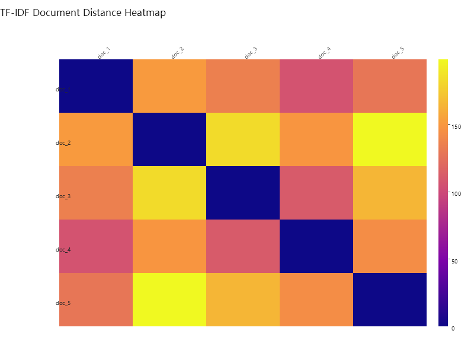

sciBASIC#
↖
sciBASIC#
↖
05 Tutorial — Text features
Turn five short documents into a TF-IDF space, then measure how far apart their vocabularies sit.
TF-IDF is the smallest useful model of "what a document is about". This demo registers five short documents in the sciBASIC# TFIDF index, pulls each one back out as a weighted term vector, and fills a 5 × 5 matrix of pairwise squared distances — printed to the console and rendered as a Plasma-colored heatmap where dark cells mean "same vocabulary" and bright cells mean "different worlds".
02 Pipeline
From five sentences to a distance matrix
Index
Every document is whitespace-tokenized (StringSplit("\s+")) and registered in the
TFIDF index via tfIdf.Add(++i, tokens), building the inverted
document–term table.
Vectorize
tfIdf.TfidfVectorizer(id) maps every document to its sparse TF-IDF weights: term
frequency scaled by inverse document frequency.
Measure
All 25 pairs are compared with v.SquareDistance; the row loops echo the matrix to the
console while filling a 5 × 5 array.
Visualize
A HeatmapPlot (800 × 600, PlotTheme.Light) renders the matrix with the
Plasma colormap and saves it at 300 dpi.
03 The corpus
Five documents, twenty-five pairs
The exact texts registered by tfIdf.Add — five short notes on knowledge building and creative environments:
| Document | Text |
|---|---|
| doc_1 | knowledge building needs innovative environments are better at helping their inhabitants explore the adjacent possible |
| doc_2 | As a basis for evaluating explanations, creative knowledge building weight of evidence is a poor substitute for the first two criteria listed above. |
| doc_3 | A public idea database makes every passing idea visible to everyone else in the organization and do creative work. |
| doc_4 | questioning and various disturbances initiate cycles of innovation and creative organization knowledge. |
| doc_5 | We need some way to ensure knowledge to spread among environments that any notes that are dropped are dropped. |
01 The Script
Full demo source
The complete script exactly as executed by the sciBASIC# script engine (vbs.exe) — nothing elided.
#include "Microsoft.VisualBasic.Data.NLP.dll"
#include "Microsoft.VisualBasic.Data.Framework.dll"
#include "Microsoft.VisualBasic.Drawing.dll"
#include "Microsoft.VisualBasic.Data.DataPlot.dll"
Imports System.IO
Imports Microsoft.VisualBasic.ComponentModel.Collection
Imports Microsoft.VisualBasic.Data.NLP
Imports Microsoft.VisualBasic.Language
Imports Microsoft.VisualBasic.Math.Correlations
imports microsoft.visualbasic.data.plots
imports microsoft.visualbasic.drawing
imports Microsoft.VisualBasic.Data.Framework
Dim docs = New String() {
"knowledge building needs innovative environments are better at helping their inhabitants explore the adjacent possible",
"As a basis for evaluating explanations, creative knowledge building weight of evidence is a poor substitute for the first two criteria listed above.",
"A public idea database makes every passing idea visible to everyone else in the organization and do creative work.",
"questioning and various disturbances initiate cycles of innovation and creative organization knowledge.",
"We need some way to ensure knowledge to spread among environments that any notes that are dropped are dropped."
}
Dim tfIdf As New TFIDF
Dim i As i32 = 1
For Each seq As String In docs
Call tfIdf.Add(++i, seq.StringSplit("\s+"))
Next
Dim N As Integer = docs.Length
Dim dist As Double()() = RectangularArray.Matrix(Of Double)(N, N)
For id As Integer = 1 To tfIdf.N
Dim v = tfIdf.TfidfVectorizer(id.ToString)
Dim rd As Double() = New Double(N - 1) {}
Console.Write(id.ToString() & vbTab)
For j As Integer = 1 To tfIdf.N
Dim d = v.SquareDistance(tfIdf.TfidfVectorizer(j.ToString))
rd(j - 1) = d
Call Console.Write(d.ToString("F4").PadLeft(8, "0"c) & vbTab)
Next
dist(id - 1) = rd.ToArray
Call Console.WriteLine()
Next
call SkiaDriver.Register()
Using plt As New HeatmapPlot(800, 600, PlotTheme.Light())
plt.Title = "TF-IDF Document Distance Heatmap"
plt.Matrix = dist.ToMatrix()
plt.RowLabels = fieldName("doc", dist.length, sep := "_").toarray()
plt.ColLabels = fieldName("doc", dist.length, sep := "_").ToArray()
plt.ColorMap = HeatmapPlot.ColorMapType.Plasma
plt.ShowValues = False
plt.Plot()
plt.SavePng("Z:/tfidf-heatmap.png", 300)
End Using03 Results
The document-distance heatmap

{kind=link}